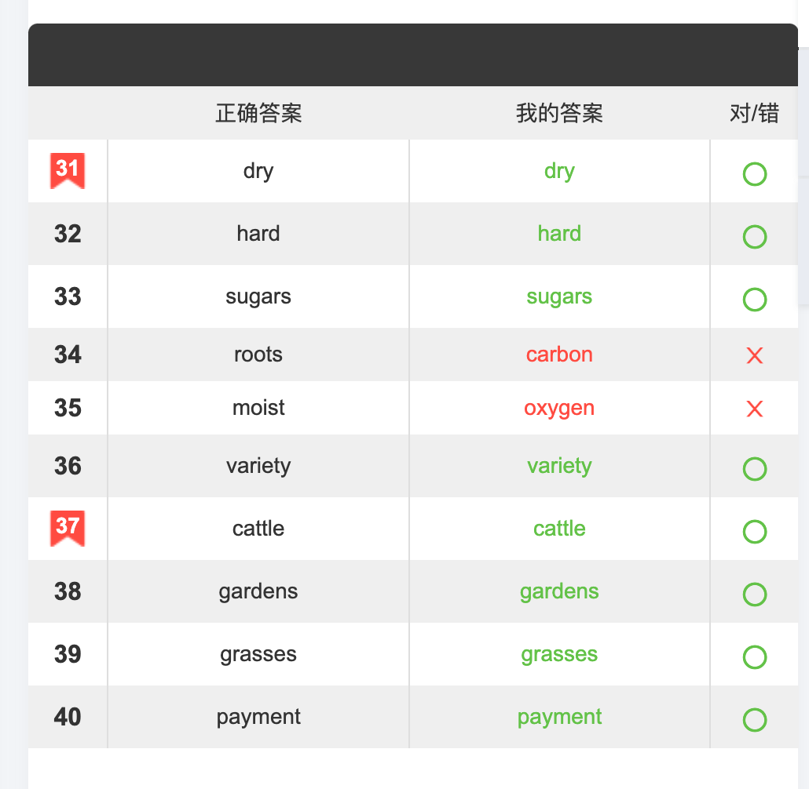
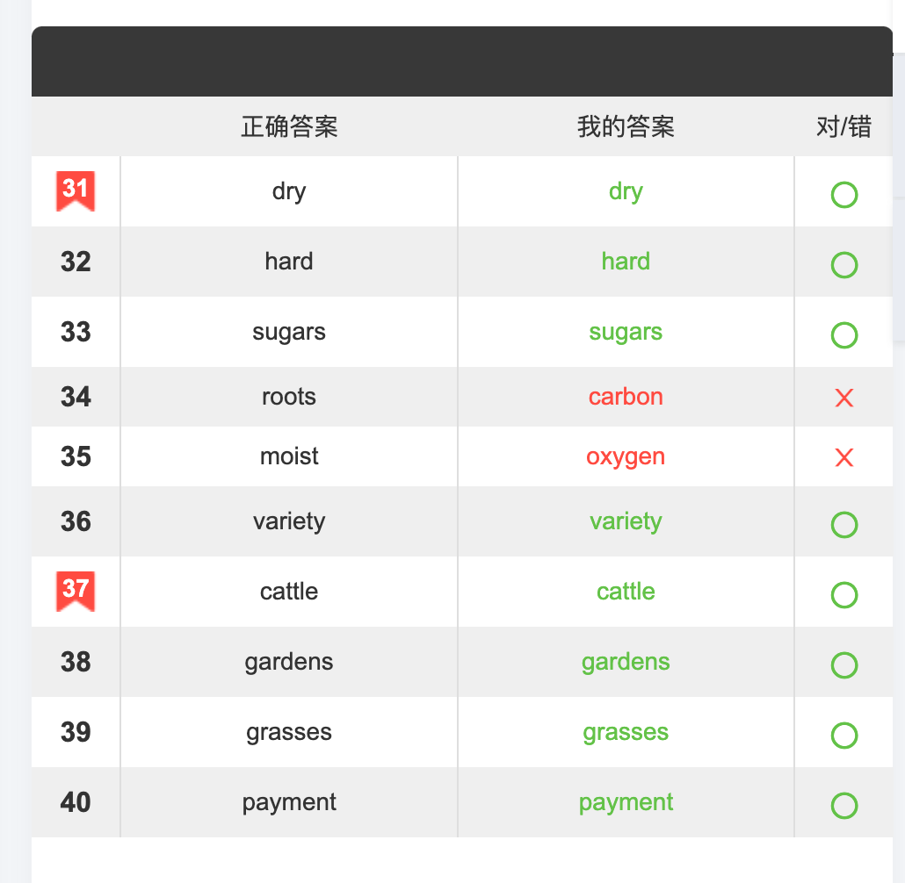

概述
大家好，我是张译匀，目前就读于中央财经大学金融学院，主修金融科技。我热衷于数据分析与金融市场研究，曾在杉数科技、中信证券等多家公司实习积累了丰富的实战经验。在学习与工作中，我掌握了 Python、SQL 等编程语言，并通过项目实践提升了数据处理和分析能力。我喜欢挑战自己，擅长解决复杂问题，乐于通过团队合作推动创新。
大家好，我是张译匀，目前就读于中央财经大学金融学院，主修金融科技。我热衷于数据分析与金融市场研究，曾在杉数科技、中信证券等多家公司实习积累了丰富的实战经验。在学习与工作中，我掌握了 Python、SQL 等编程语言，并通过项目实践提升了数据处理和分析能力。我喜欢挑战自己，擅长解决复杂问题，乐于通过团队合作推动创新。
